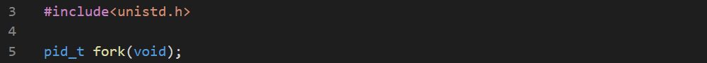

To create and run a process to run concurrently with the parent, we need fork()funciton. It freezes your processes, makes a clone and wakes both of them up. It returns -1 if the function failed, zero when succeeded and a value greated than zero when it succeeded and you have a parent.

When a process is forked, it creates a duplicate of it's current status including the data it contains but not the segment code as it's immutable.
You can put a process to sleep using sleep() function. It sleeps at least secsseconds if no signal occurs. It returns zero if the time has elapsed or non-zero if the sleep is disturbed and shows how many seconds are left.

The getpid() function is used to get the PID of the invoking process.

The wait() function waits until any of the process's children completes. If it is invoked with NULLif we don't want to know the child's exit status and pointer to an int otherwise. It returns -1 on error and PID of the child otherwise.

Let's try this out-


The waitpid() waits until the specified PID finishes. The PID is set to zero if it waits for any child.

There are a few functions to load an executable code into the memory. The replace the executable code of the invoker. That means the invoker is removed from the memory and the invokee does not return to it.

The l suffix means the function uses a variadic argument and must be ended with NULL. The p suffix means that the function will search for the program in PATH variable. The e suffux means the function will create a new environment specified in the parameter. If no environment is specified, the function copies it from the invoker. The v suffix says that the function doen's use a variadic list, but uses an array.